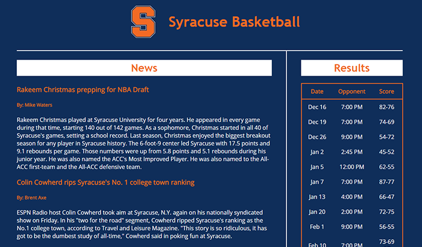
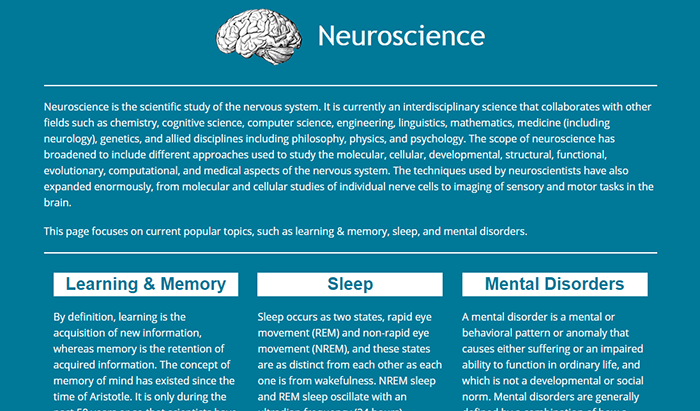

Hello,
My name is Akinniyi Akinpelu, and I am a recent graduate looking for a Front-end Developer position. I have experience with HTML, CSS (Bootstrap, Foundation, LESS), Javascript (jQuery, AJAX, JSON), and SQL, and have intermediate Java and Python skills. I am currently based in Rochester NY, but am open to relocating.

